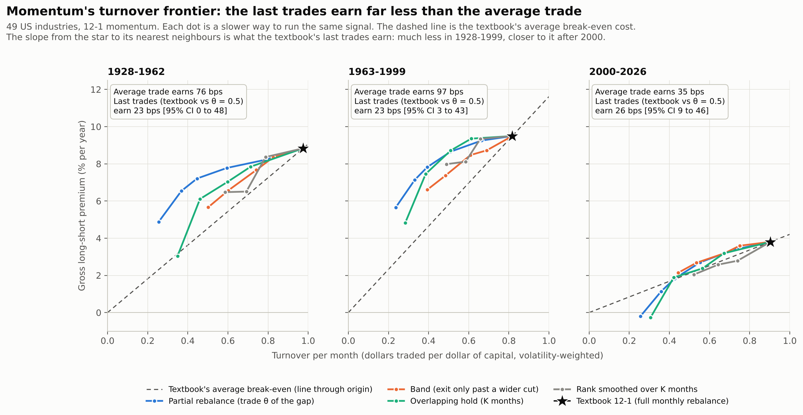
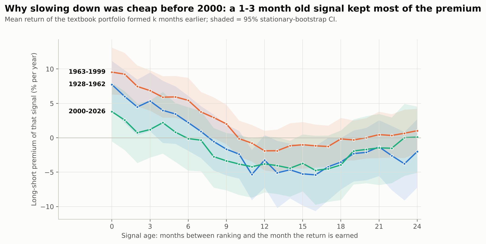
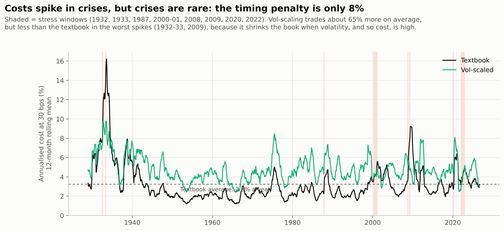
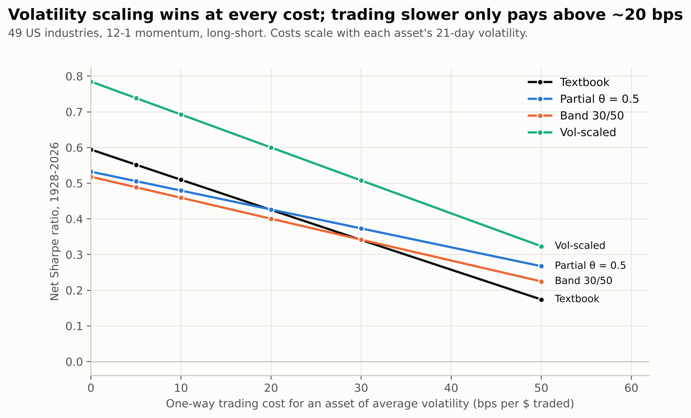
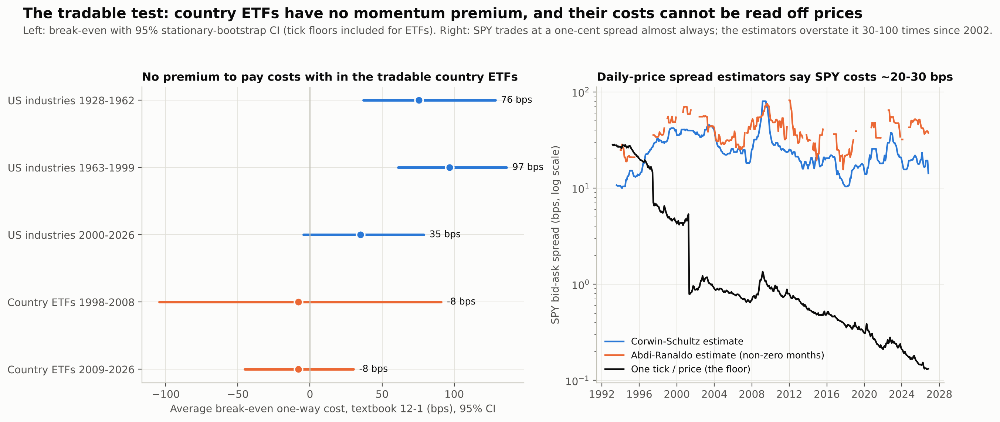

Working paper · Project 12
Average versus marginal break-even costs of momentum, US industries 1928–2026 and country ETFs 1998–2026
Project 12 of 30 Quant Research Projects · Working paper, November 2026

Every paper on momentum and trading costs reports one number: the break-even cost, the one-way cost per dollar traded at which the strategy's net return falls to zero. That number is an average: total gross premium divided by total turnover. It answers "should I run momentum at all?" It does not answer the question an implementer actually faces, which is "how fast should I trade it?" That question is about the marginal trade: the premium that the last, most frequent rebalancing trades add, per extra dollar they turn over. If momentum's alpha were spread evenly across its trades, the two numbers would be equal. They are not.
This project measures both, on the same signals, with exact turnover accounting. Universe A is the 49 Fama–French US industries, daily, January 1928 to September 2026 (1,185 months). Universe B is 42 single-country equity ETFs, the version of the strategy a private investor can actually trade, from 1998 to October 2026. Each universe runs three signals (12-1, 6-1 and 1-0 months) through 21 ways of implementing the same signal: the textbook full monthly rebalance, 16 slower variants from four families (partial rebalancing, banding, overlapping holding periods, rank smoothing), volatility scaling, and a long-only version. That makes 126 backtests. Costs scale with each asset's own recent volatility, as microstructure theory predicts. Inference uses paired stationary-bootstrap confidence intervals and Holm correction over a confirmatory family of seven tests.
Main findings
Practical rule. Report two break-evens, not one. The average break-even tells you whether a strategy is worth running. The marginal break-even, the slope of the turnover frontier at your design, tells you whether your trading speed is right. For industry momentum before 2000, trading slower paid for anyone whose all-in cost exceeded about 20–25 bps. Volatility scaling paid at every cost level.
Momentum is the anomaly most exposed to trading costs, because it turns over a large part of its book every month. The literature has argued about whether it survives costs for twenty years. Lesmond, Schill and Zhou (2004) call its profits "illusory". Korajczyk and Sadka (2004) estimate how much capital it can absorb. Frazzini, Israel and Moskowitz (2018) use a large institution's live trades and find costs an order of magnitude below earlier estimates. Novy-Marx and Velikov (2016) show that cost-mitigation rules such as buy/hold spreads cut the drag substantially. All of them summarise an anomaly by its break-even cost, and they disagree mainly about which cost to compare it with.
That framing hides an asymmetry. A strategy's trades are not equally valuable. The trades that move a winner from rank 15 to rank 16, or that re-sell a loser that has just bounced, carry much less of the premium than the trades that put the strongest new winners into the book. If the low-value trades are also the most frequent, the average break-even overstates what the marginal dollar of turnover earns. An investor can then keep most of the premium at a fraction of the turnover. The right summary is a turnover frontier: gross premium against turnover across many ways of running the same signal. Its slope at the chosen design is the marginal break-even cost.
Three secondary questions follow, and each is a hypothesis fixed before the confirmatory tests were run (§5).
This project builds on earlier projects rather than repeating them. Project 03 showed that a time-series trend rule's value is mostly a volatility forecast. Project 10 found that 12-1 momentum, used as a screen signal, does not forecast an ETF's own next-month return. This project is about the cross-section, ranking assets against each other, and about implementation rather than prediction.
Universe A: 49 US industries. These are Ken French's value-weighted industry portfolios, daily excess returns from July 1926 to September 2026 (CRSP vintage 202609). It is the panel built by project 09, copied here unchanged so the project is self-contained. The same 49 industries also appear in project 05. Reusing them is deliberate: industry momentum (Moskowitz and Grinblatt, 1999) has a century-long record, and a value-weighted industry is dominated by large, liquid stocks, so its implementation cost is close to large-cap cost. An industry joins the ranking once it has 12 full months of history; 39 to 49 are ranked at any time (46 on average).
Universe B: 42 country ETFs. These are all US-listed single-country equity ETFs with history on Yahoo Finance: the 17 original iShares WEBS from March 1996, then Brazil, Taiwan and Korea (2000), South Africa (2003), China (2004), and 20 more listed from 2007 to 2015, including VanEck Vietnam and Global X Greece and Argentina. EWUS is excluded because it duplicates the UK. The data are daily OHLCV plus the dividend-adjusted close, to 17 November 2026. The sample is used to October 2026, and returns are in excess of the 3-month T-bill (^IRX, from project 03). Two data-quality problems are handled explicitly:
Both data files and the scripts that rebuild them are in data/ and src/fetch_data.py.
Signals. At each month-end, an asset's signal is its cumulative log excess return over months m−11…m−1 (12-1, skipping the most recent month), m−5…m−1 (6-1), or month m alone (1-0, short-term industry momentum). The textbook book is long the top 30% and short the bottom 30%, equally weighted within each leg: $1 long and $1 short per $1 of capital.
Twenty-one implementations of each signal (src/designs.py):
| Family | Designs | What it does |
|---|---|---|
| Textbook | base | Rebalance fully to the new top/bottom 30% every month |
| Partial rebalance | θ = 0.75, 0.5, 0.33, 0.25, 0.15 | Trade only θ of the gap between the current and the target book (Gârleanu and Pedersen, 2013) |
| Banding | exit at 35, 40, 50, 60% | Enter at the top/bottom 30%, but keep a name until it leaves a wider band (Novy-Marx and Velikov, 2016) |
| Overlapping hold | K = 2, 3, 6, 12 months | Hold the average of the last K monthly selections (Jegadeesh and Titman, 1993) |
| Rank smoothing | 2, 3, 6 months | Rank on the average percentile of the last K months |
| Volatility scaling | alone, with band 50%, with θ = 0.33 | Scale the book to 15% annual volatility, estimated from its own past 126 daily returns; leverage capped at 2 (Barroso and Santa-Clara, 2015) |
| Long-only | top leg only | $1 long the top 30%, judged against the equal-weight universe |
Accounting (src/engine.py). Everything is decided at the close of month m from data up to
that close. The book is bought at that close and held, buy-and-hold, through month m+1, so weights
drift with prices. Turnover at m is Σ|w_new − w_drifted|, the dollars traded per dollar of capital.
Price moves alone therefore never count as trading. A test (tests/test_engine.py::test_no_look_ahead)
rewrites every return after a date and checks that nothing decided before it changes.
Cost model. A one-way trade of |Δw_i| in asset i at month m costs
c × |Δw_i| × σ_i,m / σ̄,
where σ_i,m is the asset's annualised 21-day realised volatility at the trade date and σ̄ is the
average of σ across assets and months in the evaluation window. So c is the one-way cost for an
asset of average volatility, in bps per dollar traded. Proportionality to volatility is what the
standard microstructure models predict for both the half-spread and price impact (inventory and
adverse-selection models; the square-root impact law, Tóth et al., 2011). It is also what makes cost
timing measurable. Every result is reported as a break-even, so the level of c is never assumed.
Every constant-cost version is also in results/summary.csv. Universe B adds a measured floor:
half a tick divided by the fund's price ($1/8 before June 1997, $1/16 until AMEX decimalisation in
April 2001, $0.01 after). No trade can cross a quoted spread narrower than one tick.
Uncertainty comes from a stationary bootstrap (Politis and Romano, 1994) of months, with mean block 12 and 2,000 draws. The same resampled months are used for every design, so differences between designs are paired.
The family below was fixed before these tests were run and is Holm-corrected as a whole
(results/hypotheses.csv). In the interest of full disclosure: H2 was framed after a first
exploratory pass over a smaller grid of eight designs. That is why §6.1 reports all 16 slower
designs and every era, and not only the three in the family.
| Hypothesis | Estimate (95% CI) | p (raw) | p (Holm) | |
|---|---|---|---|---|
| H1 | Cost-timing multiplier of textbook 12-1 > 1 (A, 1928–2026) | κ = 1.081 [1.050, 1.113] | 0.0005 | 0.003 |
| H2a | Marginal break-even (textbook vs θ = 0.5) < average | 24 bps [12, 36] vs 71 | 0.0005 | 0.003 |
| H2b | Marginal break-even (textbook vs band 50%) < average | 44 bps [29, 60] vs 71 | 0.004 | 0.009 |
| H2c | Marginal break-even (textbook vs hold 3) < average | 32 bps [17, 47] vs 71 | 0.0015 | 0.004 |
| H3a | Vol-scaled net Sharpe > textbook at 10 bps | +0.18 [+0.09, +0.28] | 0.0005 | 0.003 |
| H3b | Vol-scaled net Sharpe > textbook at 30 bps | +0.17 [+0.08, +0.26] | 0.0005 | 0.003 |
| H4 | Country-ETF textbook 12-1 has a positive gross premium (B) | −0.54%/yr [−6.20, +4.95] | 0.55 | 0.55 |
A p-value of 0.0005 is the floor with 2,000 bootstrap draws.
Figure 1 plots each slower design's gross premium against its turnover, era by era. The dashed ray through the origin has the textbook's average break-even as its slope. A design above the ray earns more per dollar traded than the textbook does.
| Universe A, 12-1, 1928–2026 | Gross premium (%/yr) | Turnover (/month) | Average break-even (bps) | Share of turnover saved | Share of premium lost | Marginal break-even of the skipped trades (bps) |
|---|---|---|---|---|---|---|
| Textbook | 7.72 [5.40, 9.96] | 0.84 | 71 [46, 98] | |||
| Partial θ = 0.75 | 7.30 | 0.68 | 83 | 19% | 5% | 20 [8, 32] |
| Partial θ = 0.5 | 6.73 | 0.52 | 101 [62, 142] | 38% | 13% | 24 [12, 36] |
| Partial θ = 0.33 | 5.98 | 0.40 | 118 | 53% | 22% | 30 [15, 46] |
| Band 30/50 | 5.81 | 0.48 | 89 [53, 128] | 40% | 25% | 44 [29, 60] |
| Hold 3 | 6.40 | 0.51 | 95 [56, 136] | 38% | 17% | 32 [17, 47] |
| Hold 12 | 2.81 | 0.27 | 74 | 65% | 64% | 70 [47, 92] |
(Turnover in the table is in dollars; the break-evens use volatility-weighted turnover, as defined
in §4. All 16 designs are in results/marginal_breakeven.csv.)
The first trades to go are nearly free to skip. The textbook's last 19% of turnover carries 5% of its premium, and its last 38% carries 13%. The marginal break-even rises as the design slows down: 20 → 24 → 30 → 37 → 50 bps along the partial-rebalance family. That rise is the concave frontier. Partial rebalancing and overlapping holds trace the upper edge of the frontier: for the same turnover they keep more premium than banding or rank smoothing. At 0.55 turnover, for example, θ = 0.5 keeps 6.7% a year against 5.8% for band 30/50. Banding keeps holding names whose signal has already weakened.
By era. In 1963–1999 the textbook's average break-even was 97 bps, and its marginal trades (vs θ = 0.5) earned 23 bps (CI 3–43). All 16 slower designs have a marginal break-even significantly below the average. In 1928–1962, 8 of 16 do. In 2000–2026, none does: the average break-even fell to 35 bps, and every design sits close to the same ray, with marginal break-evens of 11–57 bps spread around the average. In this era the premium per dollar traded is roughly the same for every trade, so slowing down gives up premium in proportion to the turnover it saves. The post-2000 gross premium is itself only marginally significant (3.8%/yr, t = 1.40), so the honest reading is that the frontier looks straight after 2000. The data do not reject a bend.

A slower design is a mixture of older rankings. Partial rebalancing at rate θ holds a ranking of age
k with weight θ(1−θ)^k, and a K-month hold gives weight 1/K to ages 0…K−1. Ignoring weight drift,
the decay curve α_k therefore predicts every design's gross premium (results/decay_prediction.csv).
The prediction matches the overlapping-hold backtests to within 0.10 percentage points a year in every
era. It matches the partial-rebalance backtests to within 1.2 points. The largest gaps are in the
volatile 1928–1962 era, where the slow partial designs do up to 1.2 points better than predicted.
Between trades, a partially rebalanced book lets its winners' weights grow and its losers' weights
shrink, and that drift is a small dose of momentum for free. After 2000, when the signal itself
decays faster, the same drift costs up to 0.6 points.
The decay curve explains the frontier. In 1963–1999 a ranking that was one to three months old kept 82% of the fresh ranking's premium (CI 69–97%). Skipping a month of rebalancing lost little, so trading slower was cheap. Over 1928–2026 the figure is 71% (CI 54–84%). After 2000 the point estimate is 40%, and the CI is uninformative, because the fresh premium itself is barely distinguishable from zero. Every era shows the long-horizon reversal at ages 9–18 months. That is why a 12-month hold earns little, and why its marginal break-even is close to the average.

Momentum does trade at expensive moments. In the 1932 and 1933 rebounds, the textbook's monthly cost
at 30 bps ran 5.8 and 6.8 times its full-sample average: turnover doubled, and volatility was
three times normal. In the 2008 crisis the multiple was 3.8, and in the March–May 2009 momentum crash
it was 3.0 (results/stress_windows.csv). Averaged over a century, though, these episodes are short.
The cost-timing multiplier is κ = 1.081 (CI 1.050–1.113). About half comes from when momentum
trades (κ_time = 1.04) and half from what it trades (κ_cross = 1.03: past extreme performers are
volatile). κ was largest in 1928–1962 (1.14) and is negligible after 2000 (1.02, CI 1.00–1.05).
A constant-cost backtest understates momentum's true cost by about 8%. That is a correction
worth making, but it is not a reason to doubt such backtests.

Volatility scaling flips the sign of the timing effect: κ = 0.96 (CI 0.94–0.99). The scaled book is small exactly when volatility, and so cost, is high. In the 2009 crash it traded half as much as the textbook and paid half the cost (1.2% vs 2.5% at 30 bps), on top of a much smaller gross loss (−15% vs −31%). Over the full sample it trades 65% more than the textbook (1.38 vs 0.84 per month; its average leverage is 1.6). But its premium rises even faster, so its average break-even is higher (85 vs 71 bps). Its net Sharpe beats the textbook at every cost level:
| Net Sharpe, A, 12-1 | 0 bps | 10 bps | 30 bps | 50 bps |
|---|---|---|---|---|
| Textbook | 0.59 | 0.51 | 0.34 | 0.17 |
| Partial θ = 0.5 | 0.53 | 0.48 | 0.37 | 0.27 |
| Vol-scaled | 0.78 | 0.69 | 0.51 | 0.32 |
| Difference, vol-scaled − textbook | +0.19 [+0.10, +0.29] | +0.18 [+0.09, +0.28] | +0.17 [+0.08, +0.26] | +0.15 [+0.06, +0.24] |
The gain holds in 1928–1962 (+0.26 at 10 bps) and in 2000–2026 (+0.18, CI 0.02–0.34). It is not significant in 1963–1999 (+0.04, CI −0.02 to +0.11), a calm era with few momentum crashes to avoid. Slower trading overtakes the textbook in Sharpe terms only above about 20 bps (Figure 3). That is consistent with the 20–24 bps marginal break-even of §6.1. Combining the two (vol-scaled with θ = 0.33) has the highest break-even of all, 144 bps, and a net Sharpe of 0.52 at 30 bps.
The frontier in §6.1 is drawn in hindsight. Here, each January from 1948, an investor paying c
picks among the 17 unscaled long-short designs the one with the best net mean return so far
(expanding window; the cost normalisation is expanding too). Switching between designs is charged a
full textbook rebalance, which overstates the true switching cost (src/select_speed.py).
| Cost | Sharpe, chosen in real time | Sharpe, textbook | Difference [95% CI] | Most-chosen design |
|---|---|---|---|---|
| 10 bps | 0.55 | 0.56 | −0.01 [−0.03, +0.00] | textbook (90% of years) |
| 20 bps | 0.45 | 0.48 | −0.03 [−0.06, +0.00] | textbook (63%) |
| 30 bps | 0.39 | 0.40 | −0.01 [−0.06, +0.03] | smooth 2 (50%) |
| 50 bps | 0.30 | 0.24 | +0.06 [+0.01, +0.11] | θ = 0.5 (71%) |
Near its optimum the frontier is flat, so learning the speed in real time neither helps nor hurts much at realistic costs. The marginal break-even is still the right diagnostic. As a trading rule, "slow down if your cost is above the marginal break-even" matters only when the cost is far above it.
results/summary.csv (be_const_*, sharpe_netconst_*). They differ from the volatility-scaled
numbers by the factor κ (1.0 to 1.2 across designs and eras), and no ranking of designs changes.
The same 21 designs on the 42 country ETFs find no momentum premium to protect. Textbook 12-1 earns −0.5% a year gross (CI −6.2 to +5.0; average break-even −8 bps), with −0.1% in 1998–2008 and −0.8% in 2009–2026. 6-1 earns +1.4% (t = 0.5) and 1-0 earns −1.4%. No design's gross premium is significant. Volatility scaling again does best (12-1: +2.0%/yr, Sharpe 0.13 gross), but at 10 bps its net Sharpe is 0.00. The long-only winners leg beats the equal-weight universe by 0.9% a year (t = 0.7). These are null results with wide intervals: 344 months of 10–42 funds is a small sample. What they show is that the industry premium of §6.1 is not available, net or gross, in the country universe an individual can trade.
Two cost facts in this universe are measured, not modelled:
results/spread_estimator_summary.csv).
They also go below the tick floor in 1993–2001 (Corwin–Schultz median 0.63 ticks for the country
ETFs), which no real spread can do. The estimators read the high–low range as spread. On a fund
whose price keeps moving during US hours while its home market is closed, most of that range is
price discovery, not cost. A backtest that charges these estimates would conclude that country
momentum costs 15–30 bps a trade for reasons that have nothing to do with trading costs.A harsh referee pass was run before submission. The points raised, and what was done:
pip install -r requirements.txt
bash run_all.sh # under 2 minutes on 4 cores; every CSV in results/ and every figure
src/fetch_data.py re-downloads the ETF data (Yahoo blocks some cloud machines;
src/fetch_yahoo_browser.js does the same from a browser console).
12-momentum-trading-costs/
├── README.md this paper
├── run_all.sh one-command reproduction
├── data/ industries_daily.csv.gz (A), country_etf_daily.csv.gz (B), irx_daily.csv
├── src/
│ ├── data.py loaders, stale-quote checks
│ ├── engine.py signals, designs, drift-exact turnover, cost model, kappa
│ ├── designs.py the 21 designs, eras, stress windows
│ ├── backtest.py 126 runs -> results/runs.csv.gz
│ ├── evaluate.py break-evens, marginal break-evens, hypotheses, stress windows
│ ├── decay.py event-time decay and the frontier it predicts
│ ├── select_speed.py real-time choice of trading speed
│ ├── costs_check.py spread estimators vs the tick floor
│ ├── figures.py
│ ├── stats.py stationary bootstrap, Holm
│ ├── fetch_data.py rebuild the ETF file from Yahoo
│ └── fetch_yahoo_browser.js
├── tests/test_engine.py 10 tests (look-ahead, accounting, break-even identity, kappa)
├── results/ every number in this paper as CSV
└── figures/